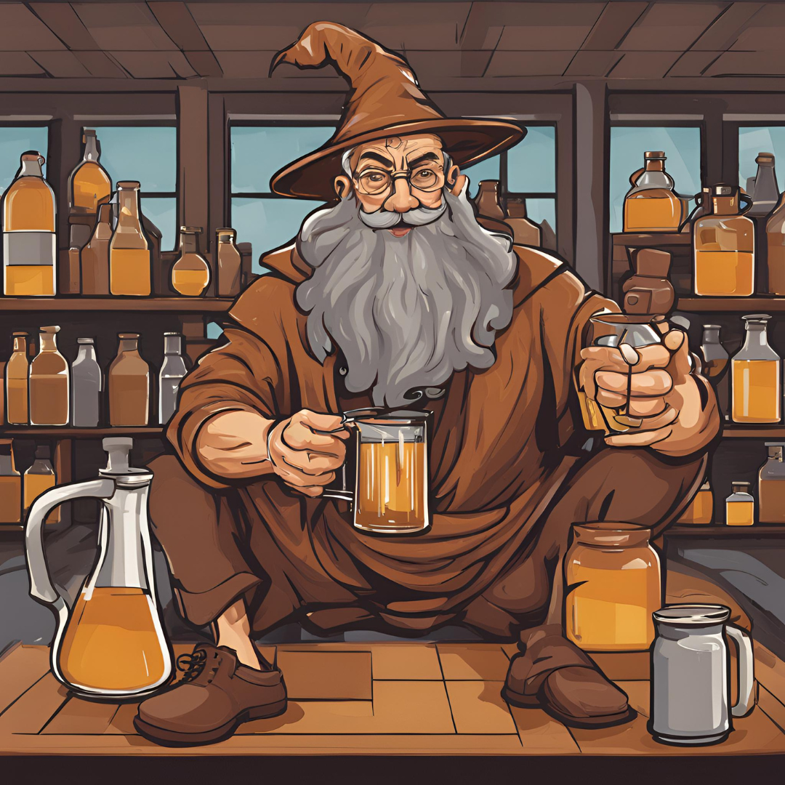
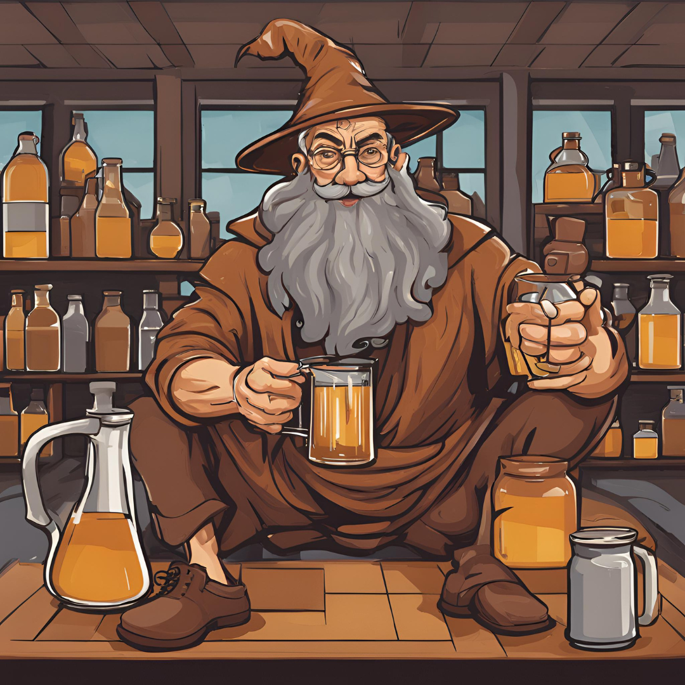
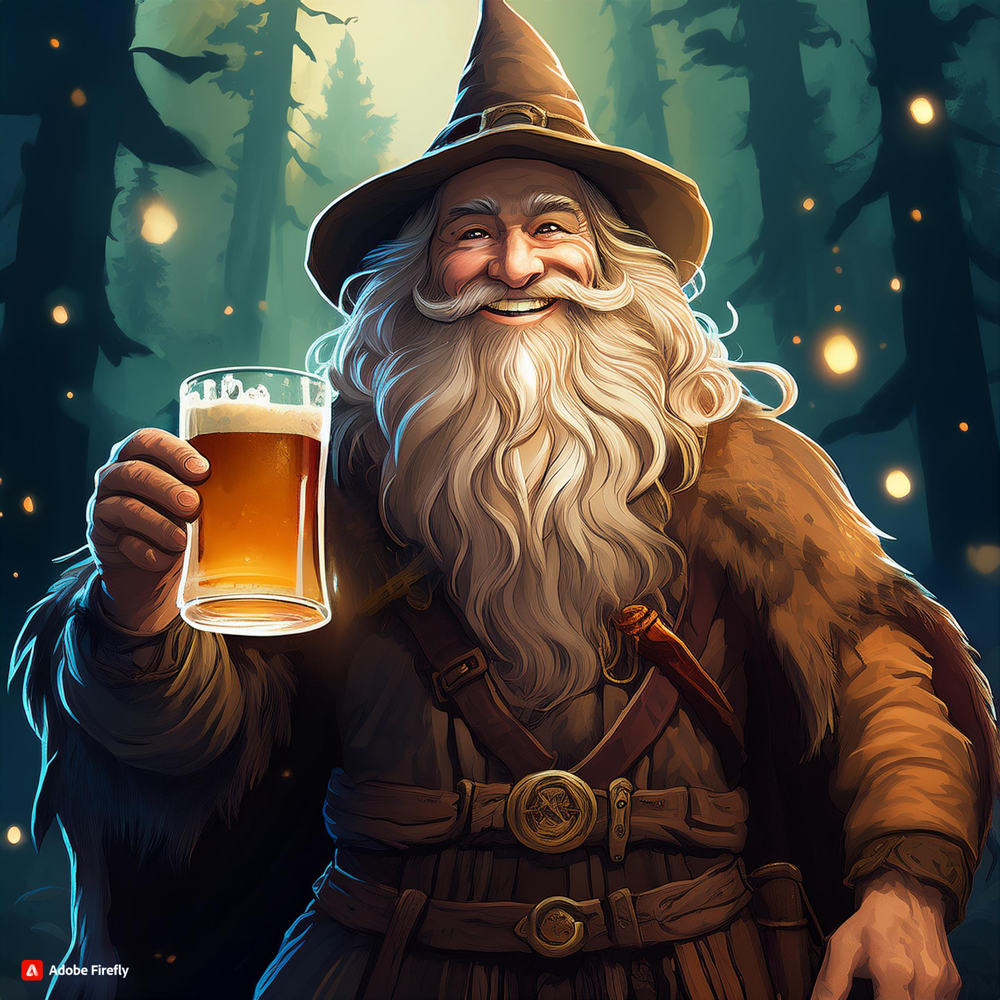
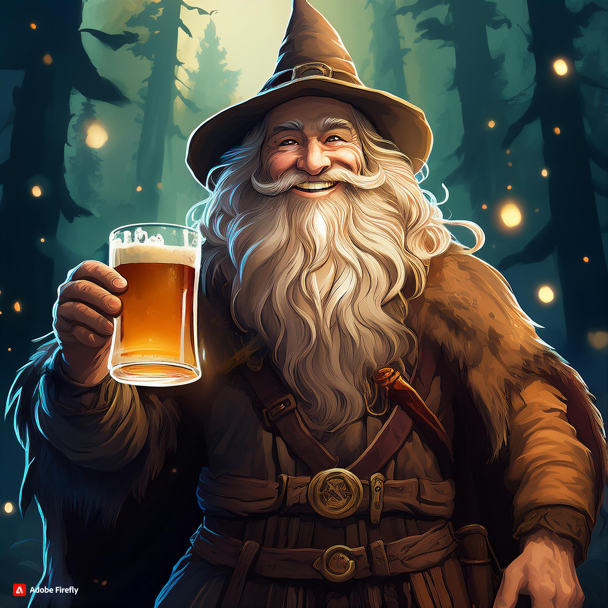

Lore: The Mead Wizard
" I en värld där mörker växer i varje hörn, finns det
också lysande fyrar av hopp och glädje. Som i trots av detta mörker
som sveper in över landet finns det drycker som bär på mer än
bara smak. Det finns ibland dessa en dryck som bryggts av honung
sedan tidernas begynnelse, vördad för sin söta styrka och även sina
arkaiska egenskaper.
I skogarna kring Linköping viskas rykten, nej... legender,
om en man som behärskar förmågan att väva dryckens egenskaper med
endast egen vilja. Han är inte en vanlig dödlig. Han är en mästare
över den arkaiska honungens dryck. Hans namn är
Mjöd-trollkarlen."
Ingen levande person har någonsin sett honom. Men på ryktesvägar,
mellan dig och mig, har jag hört att han har magiska krafter.
Han går ständigt runt med ett glas mjöd i handen därför att det är
där hans krafter härstammar från. Det är så han fyller på sin "mana".
Men hur han skapar mjödet är det ingen som vet. Det mjöd som vissa hittar
djupt i urskogarna kring Linköping ryktas vara gudomligt. Själv har jag
inte smakat än. Men jag ska leta. Jag ger fler uppdateringar desto närmre
jag kommer målet av mitt sökande.


 

 


Lore Update: Maybe The Mead Wizard Was The Friends We Made Along The Way
Sökt och sökt. Det är vad jag gjort. Ej har jag inte funnit honom och min tro börjar vackla. Kanske fanns han aldrig, kanske var Mjöd-trollkarlen ett verktyg för att inte få oss att ge upp i detta mörker. Var allt bara ett påhitt?
Nej. Jag har gett för mycket för det här. Offrat för mycket.
Han måste vara verklig.